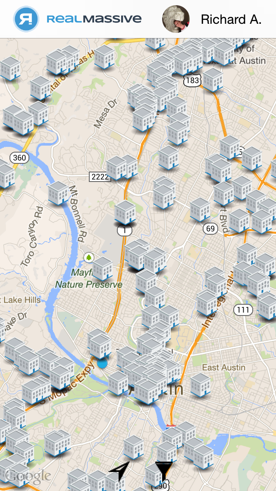
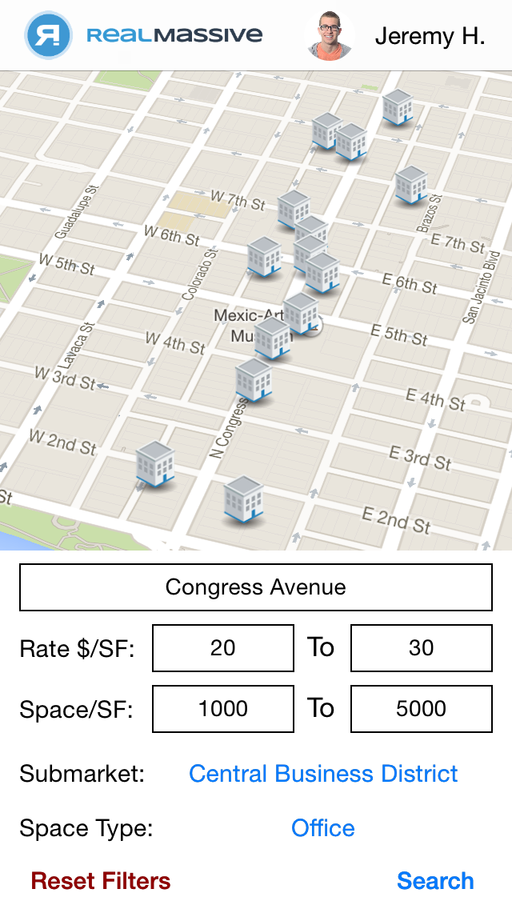
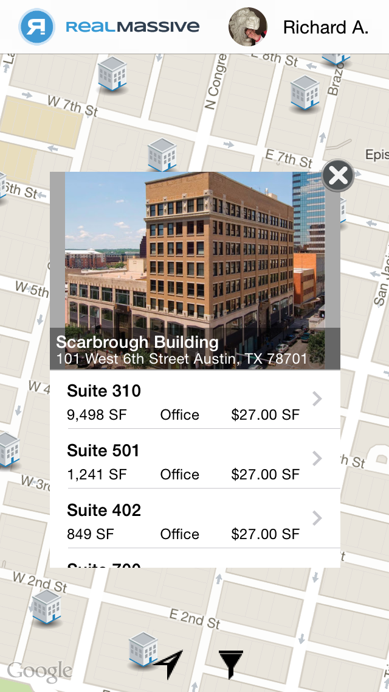
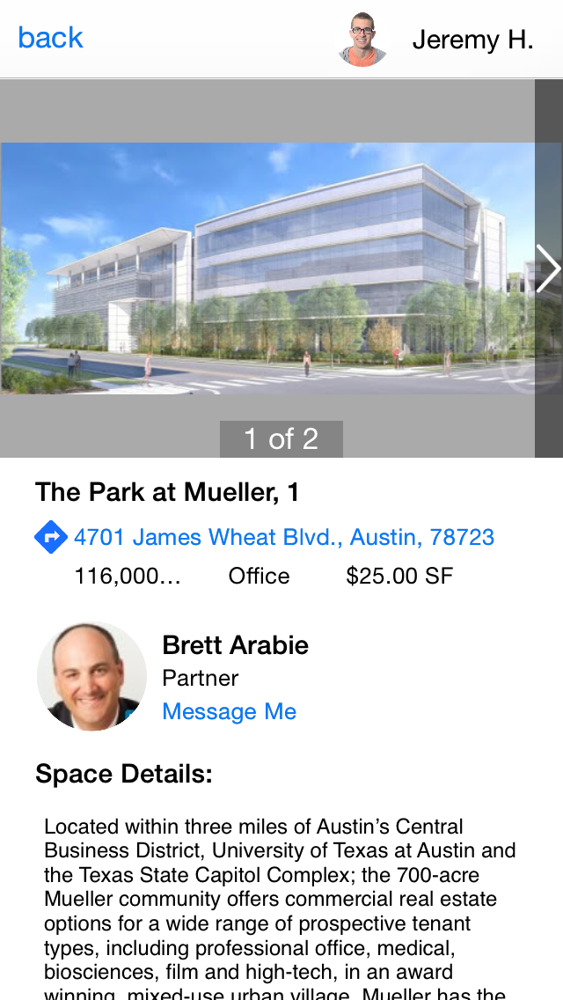
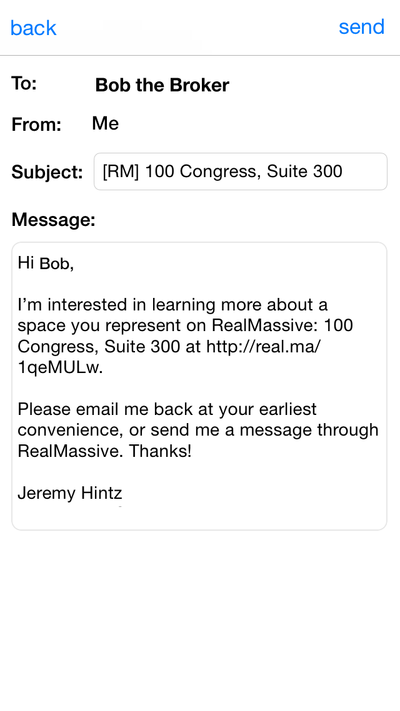
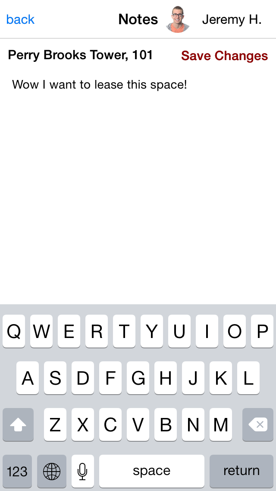

What is RealMassive for iOS?
RealMassive for iOS is an app for the iPhone that allows users to access data from realmassive.com on the go. The app makes calls to RealMassive's 3rd party API and pins the spaces on a map using the Google Maps SDK for iOS. Search all the offices, industrial warehouses, and retail locations for lease in your area, and see detailed space info, turn-by-turn directions, contact info, and more.
|  |  |  |
|  |  |  |
My Role
I worked with one other developer on the app during my summer internship at RealMassive in 2014. I made significant contributions to the way in which data was brought down into the app, how data was accessed throughout the lifecycle of the application, and how users authed using LinkedIn.
Some Technical Challenges
Many of the technical challenges I faced during this project were a direct result of the RealMassive API being in its relative infancy. There was no great way to "sip data" from the API, and many desired routes were not in place. I solved the "data sipping" problem using a combination of methods. First of all, I made asynchronous calls to the API's location search in radial rings from the user's current location.
Another challenge was using a "log in with LinkedIn" framework, since the most prominent option is not compatible with AFNetworking >2.0. Most of the main functions had to be rewritten to get rid of this dependy.